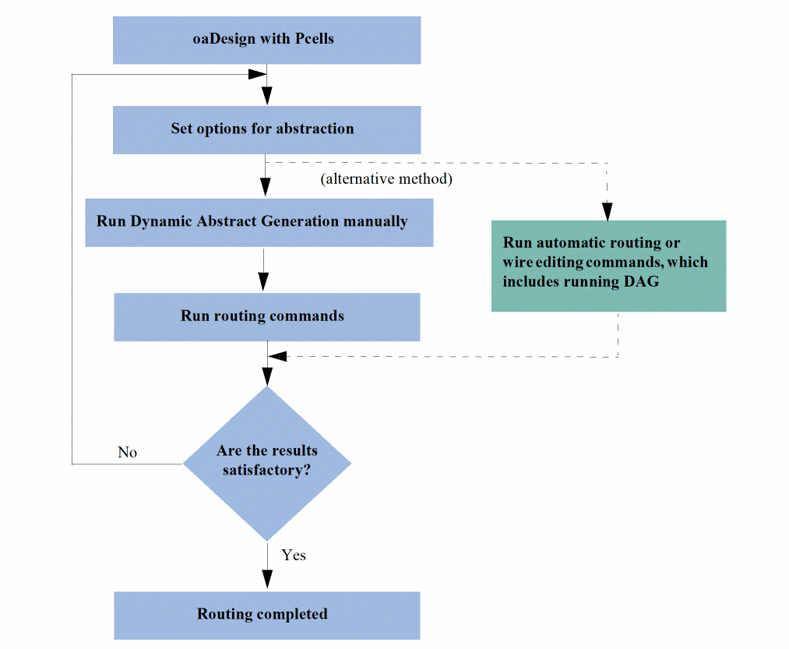

Dynamic Abstract Generation Use Model
动态抽象生成使用模型
In an OpenAccess design that contains Pcells, you can run Dynamic Abstract Generation manually by using the commands that can be accessed from the following three locations:
在包含 Pcell 的 OpenAccess 设计中，你可以从以下三个位置访问相关命令，以手动运行动态抽象生成：
- Tools – Dynamic Abstract Generation for Pcells
- Navigator assistant (by using the context-sensitive menu). For example, you can use the Navigator assistant to run Dynamic Abstract Generation for Module Generator (Modgen) instances. To do this, select a Modgen instance in the Navigator assistant and select Dynamic Abstract – Abstract Pcells from the context-sensitive menu.
- Layout canvas (by using the context-sensitive menu)
- Tools – Dynamic Abstract Generation for Pcells
- Navigator assistant（通过上下文菜单）。例如，你可以使用 Navigator assistant 对 Module Generator（Modgen）实例运行动态抽象生成：在 Navigator assistant 中选中一个 Modgen 实例，然后在上下文菜单中选择 Dynamic Abstract – Abstract Pcells。
- Layout canvas（通过上下文菜单）
You can create abstracts for all the Pcells in the design or for only the selected Pcells, and then run the routing or wire editing commands. To create abstracts, you use either the default options or specify your own abstraction rules in the Abstract Pcells form.
你可以为设计中的所有 Pcell 或仅为选中的 Pcell 创建抽象，然后运行布线或连线编辑命令。创建抽象时，你可以使用默认选项，也可以在 Abstract Pcells 窗口中指定自己的抽象规则。
When you run the automatic routing or wire editing commands, Dynamic Abstract Generation is run in the background for all the Pcell instances based on the predefined abstraction rules.
当你运行自动布线或连线编辑命令时，动态抽象生成会在后台基于预定义的抽象规则，对所有 Pcell 实例执行。
If the routing results are satisfactory, the routing process is complete. Otherwise, you can modify the abstraction rules, such as modify layer information for blockages, as required and run the process until satisfactory results are obtained.
如果布线结果令人满意，则布线流程完成。否则，你可以按需修改抽象规则（例如修改阻挡的层信息），并重复运行流程直到获得满意的结果。
The following flow diagram illustrates the Dynamic Abstract Generation process.
下图展示了动态抽象生成流程。

By default, all Pcells are marked for abstraction. If a Pcell is unmarked for abstraction, the Pcell needs to be marked again for abstraction.
默认情况下，所有 Pcell 都被标记为需要抽象。如果某个 Pcell 被取消标记为需要抽象，则需要重新标记该 Pcell 才能参与抽象。
Related Topics
相关主题
Marking or Unmarking Pcells for Abstraction
Return to top